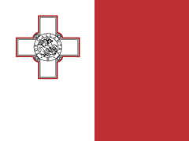

Malta's 183-Day Tax Residency Rule
More than 183 days in Malta in a calendar year makes you a Maltese tax resident. Here is exactly how the count works.
Last verified: July 2026
In short: you are treated as a Maltese tax resident if your days in Malta add up to more than 183 in a single calendar year. The days do not need to be consecutive, and the count resets every 1 January. Residency decides that Malta can tax you; your domicile then decides which income is actually taxed.
- Threshold
- More than 183 days
- Counting window
- Calendar year
- Days counted
- All days present, consecutive or not
- Why it matters
- Establishes Maltese tax residency
- Tax year
- 1 January – 31 December
- Legal basis
- Income Tax Act, Chapter 123
The rule
Malta treats you as a tax resident for a year if you are present in the country for more than 183 days within that calendar year, regardless of the purpose or nature of your stay. Two points decide most real cases:
- The window is the calendar year. Days are totalled from 1 January to 31 December and the count resets each new year. There is no rolling window.
- Days are aggregated. They do not need to be consecutive. Several separate trips in the same year are added together toward the 183.
How to count it
- List every Malta trip that falls within the calendar year.
- Count each day you were present in Malta.
- Add the days across the whole calendar year, including separate trips.
- If the total is more than 183 in that year, you are a Maltese tax resident for it.
Example. 100 days in Malta from January to April, then 90 more from September to December of the same year.
Neither trip alone crosses 183, but together they total 190 days in one calendar year, so you are a Maltese tax resident for that year.
Beyond the day count
In Malta the day count is only half the picture. Crossing 183 days establishes residency, which is what lets Malta tax you at all. What Malta actually taxes then turns on domicile and ordinary residence. An individual who is both ordinarily resident and domiciled in Malta is taxed on worldwide income. A resident who is not domiciled in Malta is taxed on the remittance basis: Maltese-source income and gains, plus foreign income brought into Malta, but not foreign income kept abroad. Residency can also arise below 183 days for someone who settles in Malta with the intention of living there. If another country also claims you as resident, a double-tax treaty decides the matter through tie-breaker rules such as permanent home and centre of vital interests.
Official source: the Malta Tax and Customs Administration guidance on Tax Residence, under the Income Tax Act (Chapter 123).
AtlasDays tracks Malta's 183-day rule automatically
Log your trips once. AtlasDays adds up your days in Malta for each calendar year, privately on your iPhone, and warns you before you cross 183 days.
Get AtlasDays on the App StoreFAQ
How many days can you stay in Malta without becoming a tax resident?
Up to 183 days in a calendar year. If you are present for more than 183 days in one year, you are treated as a Maltese tax resident for that year, whatever the purpose of your stay.
Is the 183-day rule based on the calendar year?
Yes. Days are totalled from 1 January to 31 December, they do not need to be consecutive, and the count resets each new year.
Does becoming a Maltese tax resident mean my worldwide income is taxed?
Not automatically. Residency lets Malta tax you; domicile sets the scope. Residents domiciled in Malta are taxed on worldwide income, while non-domiciled residents are generally taxed only on Maltese income and foreign income remitted to Malta.